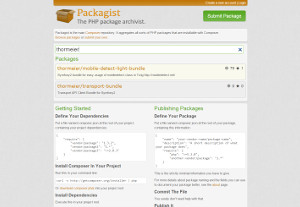

It all began in the year 2002 when I started to get into coding and software developing. Being only twelve years old, I naturally cared most about games and how they are made, since I've always loved gaming. This led me to a nice little application called the RPG Maker 2000.
It was easy, there was a GUI for the maps and you did not have to care about anything but the design of the game and the story, since dialogs and battles were created pretty straight-forward. But one had the ability to create an own battle system, even complex character menus and much more, only by sticking together simple statements to bigger structures - and this is when the developer in me came to life.
Shortly after experimenting with such "code" and learning the basics of if/else structures and loops by myself, I wanted to create my own website for smaller "scripts" I wrote in the RPG Maker 2000 for others to use. So I started to learn HTML and PHP by the age of thirteen which ultimately led me to the Secondary school for information technology in Zurich, Switzerland that I started by the age of 16.
Starting all by myself, years later, I am a well educated developer whose passion lies in high quality software and web development. My goal is good software. Software that is fun to use and fun to maintain.
If you want to get to know me better, just visit one of my profiles below and have a look at my work or write me an eMail.
The Hellvetia Metal Group is a swiss association of people that dedicate their work to Heavy Metal Music. Since I love Heavy Metal myself, I decided to join this association as their full stack "IT departement", taking care of the server infrastructure, the development of the website and its design as well as setup of a Wiki, a CI server, and an API, and of all IT related processes.
Built on the shoulders of Git, Symfony2, FreeBSD and MySQL, this project is still ongoing because of the growing audience of the online radio and the partnership with other companies. The API itself will be used for an Android App to reach even more fans and friends of "Hellvetia".
Because I'm in charge of the whole DEV, this project taught me a lot about system administration and deployment processes.
Having a focus on Symfony2 applications and being a fan of OpenSource leads to developing packages for stuff others might find useful from time to time. So far I've registered two packages that I worked on on packagist that can be downloaded by anyone.
Also my contributions in OpenSource projects are wide spread, from PHPCI, to Sylius, jPlayer and a NewRelic integration.
This page was built using Twitter Bootstrap 3.1 and HTML5-Boilerplate and is hosted on GitHub. It also uses Google Analytics to keep track of visits. All images belong to their respective owners, all rights reserved. © 2015